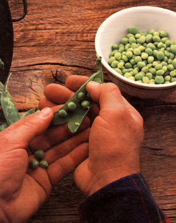
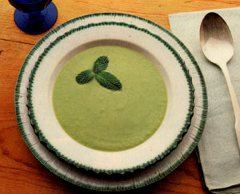

Kitchen Garden
These garden pearls are the sweet gift of spring.
After a long winter without fresh homegrown produce, peas-traditionally among the first crops to be planted-reward a gardener's patience with a crisp, sweet taste that embodies springtime. And, like homegrown corn and tomatoes, peas straight from the garden are so superior in both taste and texture to anything found in stores that they're well worth the space a patch consumes and the time it takes to produce a bountiful harvest.
What to Grow
Pisum sativum is one of the world's oldest cultivated crops. Peas were foraged from the wild for thousands of years before they were domesticated; however, the large wildlings gathered by our cave-dwelling ancestors were probably roasted and peeled like chestnuts. Greeks and Romans thought green peas were poisonous unless they were dried to cure their "noxious and stomach-destroying canker."
It wasn't until the sixteenth century that a French gardener developed a hybrid green pea that much later became the rage in the court of Louis XIV. Madame de Maintenon wrote, "There are ladies here who, having supped with the King and supped well, retire to the privacy of their chambers, there to feast in secret on dishes of petits pois. This is both a fashion and a madness!"
Since those days of petit pois mania, many varieties of peas have been developed. They now come in early types (harvested in seven or eight weeks), midseason (ready in eight or nine weeks) and late varieties (requiring 10 weeks to maturity). Some peas produce tall vines that need supports, while dwarf types often can stand alone. Among English-or green-peas there are both smooth-seeded and wrinkle-seeded types, which must be removed from their fibrous shells. Snow or sugar peas are eaten pods and all, and sugar snaps can be eaten as young pods or allowed to mature into equally tasty shelled peas.
When selecting a variety, be aware that vining types usually produce a heavier crop than do most dwarfs, and wrinkle-seeded peas tend to be sweeter than the smooth ones. (For autumn and winter plantings, choose a hardier smooth variety.)
You can ensure a long harvest by sowing early, midseason and late varieties at the same time, making successive sowings about two weeks apart until the middle of May. As the weather warms, however, the roots should be kept cool with a heavy mulch; failure to do so could result in the peas not setting fruit, and already-formed pods not filling out. (Generally speaking, one pound of seeds will plant a 100-foot row, which should produce a bushel of green peas or two bushels of edible-podded peas.) Various varieties are known for their disease resistance (early, dwarf Maestro, for example), wilt resistance (Compact Oregon Sugar Pod), fresh-eating quality (midseason Lincoln) or long productivity (late-season Parlay or Mighty Midget).
How to Grow
Peas are a cool-weather crop that can survive frosts (except when blossoming), but most varieties won't tolerate temperatures over 75°F. In southern climates, therefore, peas are often planted in the mid to late fall for a very early harvest the following spring. Elsewhere in the country, early, midseason and late varieties can all be sown four to six weeks before the last frost date in an open, sunny spot protected from high winds. The soil, however, must have warmed up to at least 40°F.
Peas prefer a sandy loam with a pH between 6.0 and 7.5 (the ideal is 7.0), but they can even be raised in heavy clay if enough organic matter is added to the soil to improve its texture and drainage. Phosphorus and potash should be worked into the plot in the autumn. Use phosphate rock, bone meal, granite dust and/or wood ashes. Remember, however, that peas make their own nitrogen and that too much of that fertilizer will result in a lot of foliage but few pods.
To insure a high germination rate, soak seeds for 24 hours and dust them with a legume inoculant (available at most garden supply stores) to help the young plants take nitrogen from the air and fix it in their roots. Then space the seeds of low-growing bush varieties at one-inch intervals in rows two feet apart. Cover with about an inch of heavy soil or two inches of light soil, and tamp down lightly. (Later plantings should be twice as deep.) As they grow, bush varieties will entwine and prop each other up. Plant vining types in the same manner in double rows six to eight inches apart on either side of five- or six-foot-tall wire or string mesh or brush supports. Leave three feet between each double row. Fill some of the space between rows with radishes, spinach, lettuce or other early greens. (Cucumbers and potatoes are good companion plants, but keep garlic and onions at a distance, since peas don't thrive when planted near alliums.)
Once the peas are in the ground, provide adequate moisture. Though the soil should never be water-logged, don't allow it to dry out when the peas are in bloom or when the pods are swelling. On the other hand, adding too much water before the plants flower will reduce the yields.
Since peas grown in good soil need no further fertilizer, the only other task will be weeding. Gently hand-pull any intruders growing near or between the vines to keep from damaging the peas' roots. A good organic mulch, such as straw or lawn clippings, placed around the base of the plants will virtually eliminate this task and will also help keep the soil moist.
What to Watch For
Crop rotation is one of the best ways to protect peas from diseases. To avoid fungi which cause root rot, as well as wilt, bacterial blight and anthracnose, don't grow peas in the same spot more than once every five years. In the Southeast, fight fusarium wilt (or pea yellows)-which turns the plants yellow, then causes them to brown, shrivel and die-by planting a wilt-resistant variety.
Powdery mildew is likely to attack in warm weather, covering the plant with a downy white fungal coating that sucks out its nutrients through tiny tubes. If applied ear ly, sulfur dust will kill the fungi. Avoid it by planting quick-maturing varieties.
The most common pests on developing vines are pea aphids, which can be defeated with sprays from the garden hose, garden-grade diatomaceous earth, wood ashes or sticky traps. The small, brownish white pea weevil bores into mature pods to lay its eggs. It can be discouraged by early planting, or by heating possibly infested seed to 120°F for five hours.
How to Harvest and Use
The pods are usually ready to pick about three weeks after blossoming, but it's better to risk gathering too early than too late. If the peas are allowed to become ripe and hard, their sugar quickly turns to starch, and the vegetable loses much of its flavor. For the same reason, you'll enjoy the taste and texture of your peas much more if you prepare them immediately after harvesting.
The shelled varieties should be picked when plump and bright green. Edible pods should be flat-just barely showing their developing peas. Pick daily, both to catch the peas at their prime and to encourage the formation of new pods. Use scissors to cut the pods from the vines; otherwise, you may pull up the whole plant or shock it into nonproduction.
Once a vine has quit producing, cut it off and toss it in the compost pile. The nitrogen-rich root nodules remain in the ground as an aid to a following crop of brassicas. Carrots, beets or beans are also good follow-ups for peas.
Whether eaten or preserved, peas should be processed immediately after picking to best retain their flavor. To can peas, shell and pack them in boiling water and a half teaspoon of salt to within one-half inch of the top of pint jars, and then process them for 25 minutes at five pounds of pressure.
Freezing is probably the best way to preserve peas' fresh-from-the-garden flavor. Just shell and blanch for one and a half minutes, then cool, drain, pack, and freeze. Snow peas, which are frozen whole, are treated in the same way. (Be sure to string the snow peas first.) Peas have a freezer life of about 12 months.
If you've allowed the peas to become overripe, it's best to shell them and spread them out on a flat surface to dry for three weeks, or until all the moisture has evaporated. Store in dry, airtight containers and use as you would any dried beans.
Peas are most tasty, though, when eaten fresh, and-like most vegetables-they are more nutritious when raw. Even when blanched, three-quarters of a cup of peas con tains around 84 calories, 316 milligrams of potassium, 27 units of vitamin C and 640 units of vitamin A. Snow peas are probably most commonly used as ingredients in stir- fries, but can also add color and crispness to numerous other dishes.
Fresh Pea Soup
2 pounds fresh, shelled peas
Salt to taste
1 scallion, finely chopped
1 tablespoon chopped mint
1 1/2 cups heavy cream
In a saucepan, cover peas with water (there should be 1 /2" of liquid on top of the vegetables) and bring to a boil. Add salt, scallion and mint. Cover and simmer for 10 minutes or until tender. Process in a blender until the mixture is smooth. Add cream and blend again briefly. Reheat, or serve chilled with a garnish of minced chives. Serves 6.
Party Peas
1 pound cooked peas, either English or snow
2 slices bacon, cut into 1/2" pieces
1 stalk celery, diced
1 medium onion, diced
1 cup spinach, finely shredded
1 teaspoon flour
1/ 3 cup beef or chicken broth
1/2 teaspoon salt
1/4 cup toasted slivered almonds
In a 9" skillet, cook bacon over medium heat until almost crisp. Add celery and onion and continue cooking until bacon is crisp. Add spinach, cover, and simmer for 5 minutes. Stir in flour, add broth, and stir constantly until thick. Add peas, salt and almonds, and toss until heated. Serves 6.
Here are some suggestions from MOTHER'S gardener, Susan Sides:
If you're using wire fencing instead of string or brush to stake climbing pea vines (and I've found that some bush varieties need low supports, too), I recommend using two-inch-by-four-inch or four-inch-by-four-inch fencing rather than chicken wire. The large holes enable you to reach through the wire mesh and pick from both sides, and make the removal of spent or dry vines easier.
Make sure that the young shoots take hold on whatever staking method you use, rather than grabbing on to each other. If they get away from you and cavort into a tangled mess, they're next to impossible to separate without a great deal of damage to the vines.
|
 Fresh pea soap has a delicate lightness its dried pea cousin can never hope to duplicate. |
 |
|